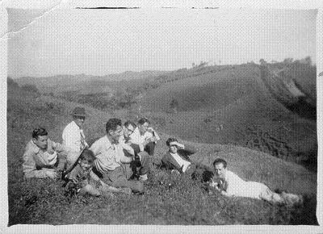

Reseña del Fresno
1. El Municipio
Se encuentra en las faldas de la cordillera Central tolimense a 5º 08’58’’ Lat. N y 0º 56’ 23’’ Long W de Bogota. Dista 114 kms de Ibagué, 220 de Bogota y 103 Kms de Manizales. El territorio, todo montañoso, se extiende sobre la rama magistral de la cordillera, está comprendido entre las hoyas de los Ríos Guarinó y Gualí que le sirven de líneas divisorias norte y sur, respectivamente. Limita al norte con el Departamento de Caldas; al sur con los municipios de Casabianca, Falán y Palocabildo; al oriente con el de Mariquita y al occidente con el de Herveo y el Departamento de Caldas.
A los Ríos Guarinó y Gualí desaguan numerosas quebradas: Providencia, Rascaderal y Barreto, afluentes del Guarinó, y las de Guarumo, San Rafael, Campeón y Nicuá que caen al Gualí. Nacen igualmente en el Municipio los Ríos Sucio y Medina que corriendo en dirección oriental y atravesando parte importante del municipio, van a desembocar en el Río Gualí, en territorio de Mariquita.
Con una extensión de 163 kms2, su topografía es variada: con relieves pronunciados y accidentados hacia los cañones de Gualí y Guarinó y en ocasiones, de amenas colinas, como en las zonas de Mireya, Primavera, El Espejo, Ríosucio, La Sierra, Alegrías, La Esmeralda, entre otras. Accidentes geográficos destacados: las cordilleras de La Sierra, Topacio, las cuchillas Argollas, La Florida, Los Andes, Paramillo, Santa Rosa y Trincheras, el Cerro La Linda y Cerro Azul.
Existen tres inspecciones de policía en los caseríos de Tablazo, Aguadita y Pavas. Las veredas incluyen: Aguadita, Aguasal, Aguasal Sector Dos, Alegrías, Aguasclaras, Alto Grande, Bajo Gualí, Campeón Alto, Campeón Medio, Campeón Bajo, Cascabel, Caucasia, Cerro Azul, Colombia, Dosquebradas, El Guayabo, El Raizal, El Espejo, España, Fátima, Guayacanal, Holdown, Los Pinos, La Ceiba, La Divina, La Florida, La Linda, Las Marías, La Sierra, Los Andes, Mateguadua, Mireya, Palenque, Paramillo, Pavas, Partidas, Petaqueros, Peñalisa, Piedragrande, Providencia, Puentetierra, San Antonio, San Bernardo, Santa Rosa, Tablazo, Torredoce, Trincheras y Ucrania
Estudios realizados por el Comité de Cafeteros del Tolima caracterizan sus suelos como formados por cenizas volcánicas de grano fino, ricas en minerales y con alta capacidad de absorción de agua, resistentes a la erosión y alto contenido de materias orgánicas, óptimos para el cultivos de café, caña de azúcar y hortalizas. Las formación ambiental corresponde al bosque húmedo subtropical con temperaturas medias entre 17 y 24º centígrados y precipitación promedio anual de 2000-4000 milímetros.
La vegetación de la región es variada, con especies como escobo, yarumo, guamo, cámbulo, pringamosa, caucho, laurel, arenillo, nogal, guadua, entre otros, y cultivos de café, caña de azúcar, cacao, maíz, yuca, fríjol, hortalizas y frutales. La ganadería de vacunos ha venido extendiéndose en algunas zonas, especialmente con ganados cruzados en cebú, holstein y pardo suizo, desapareciendo casi en su totalidad la raza blanca orejinegra, predominante hasta hace algunas décadas. Se registran crianzas de porcinos y en años recientes, se han instalado notables explotaciones avícolas.
Existen yacimientos comprobados de cobre, plomo, plata y oro; sin embargo, la minería, actividad principal en la etapa inicial de la vida municipal, ha desaparecido quedando algunos baharequeos esporádicos, sin mayor impacto económico ni de ocupación.
El municipio está servido por varias vías de penetración que comunican la cabecera con las diferentes veredas. Esta red interna de carreteras une a Fresno con Colombia, Campeón, Betania, El Tablazo, Pavas, Barreto, El Hatillo y Aguasclaras. Operan además las conexiones Guayabo-Barreto; Palenque- Aguasclaras y Partidas- Barreto. Existe una carretera entre Fresno y Casabianca. Se precisa completar las conexiones con Palocabildo, en la otra margen del Gualí, y con Victoria(Caldas) pasando el Guarinó.
2. La Cabecera
Asentada en una hondonada, algo inclinada, en forma de herradura, formada por las laderas de los Altos del Cielo, La Cruz, El Fresno y El Aguila, y mirando a los llanos del Tolima y a las estribaciones del poniente de la cordillera Oriental, la población del Fresno constituye con El Líbano el eje de la actividad socioeconómica de la cordillera Central norte-tolimense, escenario de la colonización antioqueña a partir de 1850, proceso dentro del cual, Fresno(1857) y Casabianca, inicialmente Santo Domingo (1848), constituyeron los puntos iniciales para las fundaciones de las actuales diez cabeceras municipales de origen paisa, en el Departamento del Tolima.

Existe un activo comercio local, al cual confluyen además los municipios de Casabianca y Palocabildo, Manzanares y Herveo y su Corregimiento Padua.
Se dispone de más de cincuenta Juntas de Acción Comunal, urbanas y rurales, Cuerpo de Bomberos Voluntarios, Grupos de Defensa Civil y una emisora de carácter local.
Fresno es cabecera del Distrito Judicial y Carcelario y del Distrito Notarial y de Registro conformados ambos, por los municipios de Fresno, Casabianca y Herveo.
En lo eclesiástico, corresponde a la Diócesis de Líbano-Honda y cuenta con varias parroquias y capillas para el culto.
En décadas recientes se ha registrado una activa labor de evangelización por parte de numerosos grupos cristianos que han extendido su labor a las zonas urbana y rural.
De acuerdo con el censo de 1993, Fresno contaba con 29.908 habitantes distribuidos en 15.674 hombres y 14.234 mujeres.
“ Fresno, levemente recostado sobre la cordillera y mirando al Llano es en su fisonomía serrana amalgama feliz de antioqueño y tolimense, que hoy se lanza al porvenir orgulloso de su raza y de su historia”
Texto de Carlos Cuartas